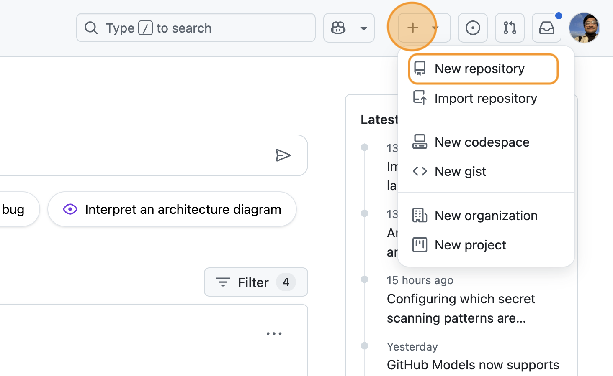
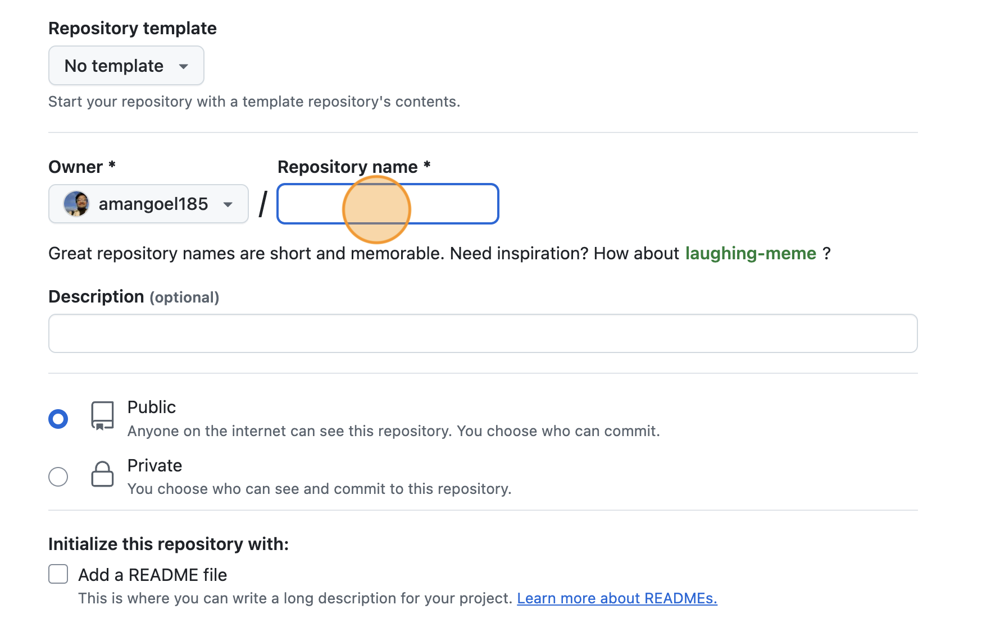
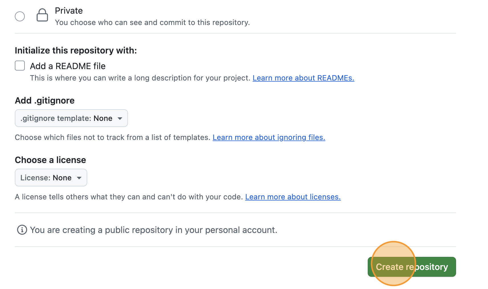
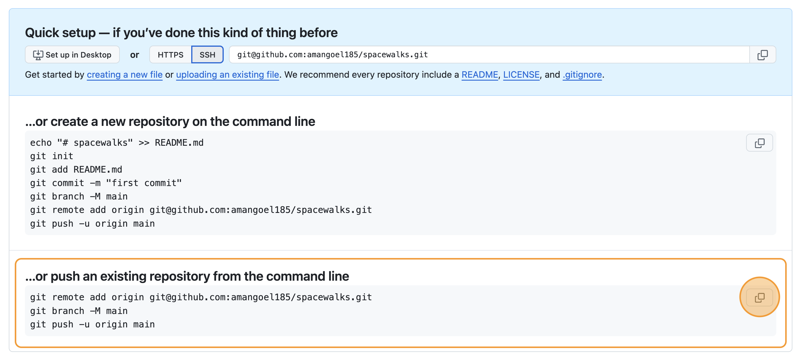

Why is version control essential to building good software
What does a standard version control workflow look like?
Objectives
Set up version control for our software project to track changes to
it
Create self-contained commits using Git to incrementally save
work
Push new work from a local machine to a remote server on GitHub
In this episode, we will set up our new research software project
using some good practices from the start. This will lay the foundation
for long-term sustainability of our code, collaboration, and
reproducibility.
This starts with following naming conventions for files, employing
version control, and (in the next episode) setting up a virtual
development environment with software dependencies to ensure the project
can be more easily and reliably run, shared and maintained. Next (over
the rest of the course) - adding tests, setting up automation
(e.g. continuous integration), documenting software and including
metadata such as licensing, authorship and citation will ensure the
results our software produces can be trusted and others can build upon
it with confidence.
Let’s begin by creating a new software project from our existing
code, and start tracking changes to it with version control.
From script to software project
In the previous episode you have unzipped spacewalks.zip
into a directory spacewalks in your home directory. If you
have not opened the software directory in VS Code already – go to
File -> Open Folder and find
spacewalks.
We also need access to a command line terminal to type various
commands. In VS Code start a new terminal via Terminal -> New
Terminal (Windows users need to make sure the new terminal is
“GitBash”; not “PowerShell” or “cmd”). Alternatively, you can work with
a shell terminal directly (and not within VS Code), if you so
prefer.
If you are not already inside this directory, from your command line
terminal you can navigate to it and list its contents with:
Over the rest of the course, we will transform a collection of these
files into a well-structured software project that follows established
good practices in research software engineering.
The first thing you may notice that our software project contains
folder astronout-data-analysis-old which presumably tries
to keep track of older versions of the code. There is a better way to do
that using version control tool, such as Git, and we can delete this
folder so it does not cause confusion:
BASH
rm-r astronaut-data-analysis-old
Version control
Before we do any further changes to our software, we want to make
sure we can keep a history of what changes we have done since we
inherited the code from our colleague.
We can track changes with version control. Later on, we will store
those changes on a remote server too – both for safe-keeping and to make
them easier to share with others. In later episodes, we will also see
how version control makes it easier for multiple collaborators to work
together on the same project at the same time and combine their
contributions.
Version control refresher
What is a version control system?
Version control systems are tools that let you track changes in files
over time in a special database that allows users to “travel through
time”, and compare earlier versions of the files with the current state.
Think of a version control system like turning on ‘Track Changes’ on
Microsoft Word/Google Docs, but for any files you want, and a
lot more powerful and flexible.
Why use a version control system?
As scientists, our main motivation for using version control is
reproducibility. By tracking and storing every change
we make, we can restore our project to the state it was at any point in
time. This is incredibly useful for reproducing results from a specific
version of the code, or tracking down which changes we (or others) made
introduced bugs or changed our results.
The other benefit of version control is it provides us with a
history of our development. As we make each change, we
record what it was, and why we made it. This helps make our development
process transparent and auditable – which is a good scientific
practice.
It also makes our project more sustainable - as our
data, software and methods (knowledge) remain usable and accessible over
time (especially if made available in shared version controlled code
repositories), even after the original funding ends or team members move
on.
Git version control system
Git is the most popular version control system used
by researchers worldwide, and the one we’ll be using. Git is used mostly
for managing code when developing software, but it can track
any files – and is particularly effective with text-based files
(e.g. source code like .py, .c,
.r, but also .csv, .tex and
more).
Git helps multiple people work on the same project (even the same
file) at the same time. Initially, we will use Git to start tracking
changes to files on our local machines; later on we will start sharing
our work on GitHub allowing other people to see and contribute to our
work.
Git refresher
Git stores files in repositories - directories where
changes to the files can be tracked. The diagram below shows the
different parts of a Git repository, and the most common commands used
to work with one.
Software development lifecycle with Git
Working directory - a local directory (including
any subdirectories) where your project files live, and where you are
currently working. It is also known as the “untracked” area of Git. Any
changes to files will be marked by Git in the working directory. Git
will only save changes that you explicitly tell it to. Using
git add FILENAME command, can you tell Git to start
tracking changes to file FILENAME in your working
directory.
Staging area (index) - once you tell Git to start
tracking changes to files (with git add FILENAME command),
Git saves those changes in the staging area on your local machine. Each
subsequent change to the same file needs to be followed by another
git add FILENAME command to tell Git to update it in the
staging area. To see what is in your working directory and staging area
at any moment (i.e. what changes is Git tracking), you can run the
command git status. The staging area lets you bundle
together groups of changes to save to your repository.
Local repository - stored within the
.git directory of your project locally, this is where Git
wraps together all your changes from the staging area and puts them
using the git commit command. Each commit is a new,
permanent snapshot (checkpoint, record) of your project in time, which
you can share or revert to.
Remote repository - this is a version of your
project that is hosted somewhere on the Internet (e.g., on GitHub,
GitLab or somewhere else). While your project is nicely
version-controlled in your local repository, and you have snapshots of
its versions from the past, if your machine crashes you still may lose
all your work. Plus, sharing or collaborating on local work with others
requires lots of emailing back and forth. Working with a remote
repository involves ‘pushing’ your local changes to it (using
git push), and pulling other people’s changes back to your
local copy (using git fetch or git pull). This
keeps the two in sync in order to collaborate, with a bonus that your
work also gets backed up to another machine. Best practice when
collaborating with others on a shared repository is to always do a
git pull before a git push, to ensure you have
any latest changes before you push your own.
Before we start, if you forgot to do it during setup, tell Git to use
main as the default branch. More modern versions of Git use
main, but older ones still use master as their
main branch. They work the same, but we want to keep things consistent
for clarity.
BASH
$ git config --global init.defaultBranch main
At this point, we should be located in our spacewalks
directory. We want to tell Git to make spacewalks a
repository – a directory where Git can track changes to our files. We do
that with:
BASH
$ git init
We can check everything is set up correctly by asking Git to tell us
the status of our project:
BASH
$ git status
OUTPUT
On branch main
No commits yet
Untracked files:
(use "git add <file>..." to include in what will be committed)
data.json
my code v2.py
nothing added to commit but untracked files present (use "git add" to track)
This tells us that Git has noticed two files in our directory, but
unlike Dropbox or OneDrive, it does not automatically track
them. We need to tell Git explicitly which files we want it to track.
This is not a handicap, but rather helpful, since scientific code can
have vast inputs or outputs we might not want Git to track and store
(GBs ot TBs of space telescope data) or require sensitive information we
cannot share (for example, medical records).
Before we commit this inital version, we should try to run it. This
is often the first thing you might do upon recieving someone’s code.
BASH
$ python3 my\ code\ v2.py
You will get an error that looks something like the following:
OUTPUT
Traceback (most recent call last):
File "/Users/USERNAME/Downloads/spacewalks/my code v2.py", line 2, in <module>
data_f = open('/home/sarah/Projects/ssi-ukrn-fair-course/data.json', 'r')
FileNotFoundError: [Errno 2] No such file or directory: '/home/sarah/Projects/ssi-ukrn-fair-course/data.json'
We get this error because the paths to the data files have been hard
coded as absoulte paths for the original developer’s machine.
Hard-coding paths is not very reproducible, as it means the paths need
to be changed whenever the code is run on a new computer. Instead, we
will soon change the code to use the relative paths within the project
structure and eventually we will change the code to take in arguments
from the command line when it is run. When we commit the files, we will
note that the code is broken in our commit message. This is a best
practice if you decide to commit broken code.
Add files into repository
We can tell Git to track a file using git add:
BASH
$ git add my\ code\ v2.py$ git add data.json
and then check the right thing happened:
BASH
$ git status
OUTPUT
On branch main
No commits yet
Changes to be committed:
(use "git rm --cached <file>..." to unstage)
new file: data.json
new file: my code v2.py
Git now knows that should track the changes to
my code v2.py and data.json, but it has not
‘committed’ those changes to the record yet. A commit is a snapshot of
how your tracked files have changed at a stage in time. To create a
commit that records we added two new files, we need to run one more
command:
BASH
$ git commit -m"Add the initial spacewalks data and codeBREAKING CHANGE: Path to data is hard coded and needs to be fixed"
OUTPUT
[main (root-commit) bf55eb7] Add the initial spacewalks data and code
2 files changed, 437 insertions(+)
create mode 100644 data.json
create mode 100644 my code v2.py
At this point, Git has taken everything we have told it to save with
the git add command and stored a copy (snapshot) of the
files in a special, hidden .git directory. This is called a
commit (or revision).
The -m option means message, and records a short,
descriptive, and specific comment that will help us remember later on
what we did and why. If we run git commitwithout-m , Git will still expect a message – and will launch a
text editor so that we can write a longer one.
Remember, good commit messages start with a brief (<50 characters)
statement about the changes made in the commit. Generally, the message
should complete the sentence “If applied, this commit will…”. If you
want to go into more detail, add a blank line between the summary line
and your additional notes. Use this additional space to explain why you
made changes and/or what their impact will be.
At this point in the lesson, you may choose to demonstrate how the
same steps of staging and committing changes can also be achieved with
the VS Code graphical interface.
The Source Control interface to Git in VS
Code
Depending on your relative levels of comfort working with that
graphical interface and the command line interface to Git, you can
choose how you want to demonstrate the remaining steps in this episode
and when we use Git again elsewhere. The lesson will continue to present
version control steps with the command line interface only.
If we run git status now, we see:
BASH
$ git status
OUTPUT
On branch main
nothing to commit, working tree clean
This tells us that everything is up to date.
Where are my changes?
If we run ls at this point, we’ll still only see two
files – our script, and our dataset. Git saves information about our
files’ history in the special .git directory mentioned
earlier. This both stops our folders being cluttered with old versions,
and also stops us accidentally deleting them!
You can see the hidden Git directory using the -a flag
to show all files and folders:
BASH
$ ls -a
OUTPUT
....git
If you delete it, your directory will stop being a repository, and it
will lose your history of changes. You never need to look into
.git yourself – Git adds useful commands to do that, which
are covered later on.
Make a change
You may have noticed that the script we received contain blank spaces
in filename. This meant that, when we were typing the script’s name into
the terminal, we had to add a slash before the space like this:
my\ code\ v2.py. Using a backslash in this way is called
“escaping”. It lets the terminal know to treat the space as part of the
filename, and not a separate argument. It is a bit inconvenient and can
cause problems if you forget, so best practise is to avoid spaces in
filenames. The simplest fix is to replace the spaces with underscores
_ instead.
To rename the files using git you can use the git mv
command:
BASH
$ git mv my\ code\ v2.py my_code_v2.py
If you run git status again, you’ll see Git has noticed
the change in the filename. Note, git mv handles the name
change directly, instead of seeing a deleted file and a new file as
would be the case if we’d used mv and then
git add. It also stages the changes to be committed.
BASH
$ git status
OUTPUT
On branch main
Changes to be committed:
(use "git restore --staged <file>..." to unstage)
renamed: my code v2.py -> my_code_v2.py
Rename our data and output files
Now that we know how to rename files in Git, we can use it to make
our files and code a bit easier to understand.
We may want to:
Give our script and input data file more meaningful names, e.g
eva_data_analysis.py and eva-data.json. This
change also uses removes version tracking from the script name as we are
using Git for version control any more as Git will keep track of that
for us.
Choose informative file names for our output data file
(e.g. eva-data.csv) and plot
(cumulative_eva_graph.png).
Use relative paths (e.g. ./eva-data.json) instead of
absolute paths
(e.g. home/sarah/Projects/ssi-ukrn-fair-course/data.csv) to
the files (which were hardcoded to the path on our colleagues machine
and would not work on ours).
Update the Python script with these changes.
Update the filenames in the repo
Try to make these changes yourself.
Give our Python script and input data file informative names -
eva_data_analysis.py and eva-data.json,
respectively.
Update other file names and paths used in the script - output CSV
data (eva-data.csv to match the new input data name) and
plot(cumulative_eva_graph.png).
Stage and commit these changes in the Git repository.
Firstly, let’s update the file names in our Python script from VS
Code:
Next, we need to rename the files on the file system using Git:
BASH
git mv data.json eva-data.jsongit mv my_code_v2.py eva_data_analysis.pygit add eva_data_analysis.pygit status
OUTPUT
On branch main
Changes to be committed:
(use "git restore --staged <file>..." to unstage)
renamed: data.json -> eva-data.json
renamed: my_code_v2.py -> eva_data_analysis.py
Finally, we can commit our changes:
BASH
git commit -m"Implement informative file names"
Interacting with a remote Git server
Git is distributed version control system and lets us synchronise
work between multiple copies of the same repository - which may not be
on your machine (called remote repositories). So far,
we have used a local repository on our machine and,
even though we have been incrementally saving our work in a way that is
recoverable, if we lost our machine then we would lose all our code
along with it,
Fortunately, we can easily upload our local
repository, with all our code and the history of our
development, to a remote server so that it can be backed-up and
recovered in future.
Git - distributed version control system, image
from W3Docs (freely available)
GitHub is an online software
development platform that can act as a central remote server. It uses
Git, and provides facilities for storing, tracking, and collaborating on
software projects. Other Git hosting services are available, such as GitLab and Bitbucket.
Putting our projects on GitHub helps protect them against deletion,
and also makes it easy to collaborate and share them. Our collaborators
can access the project, download their own copy, and even contribute
work back to us.
Let’s push our local repository to GitHub and share it publicly.
In your browser, navigate to https://github.com and sign into your account.
In the top right hand corner of the screen, there is a menu
labelled “+” with a dropdown. Click the dropdown and select “New
repository” from the options:

Creating a new GitHub repository
You will be presented with some options to fill in or select
while creating your repository. In the “Repository Name” field, type
“spacewalks”. This is the name of your project and matches the name of
your local folder.

Naming the GitHub repository
Ensure the visibility of the repository is “Public” and leave all
other options blank. Since this repository will be connected to a local
repository, it needs to be empty which is why we chose not to initialise
with a README or add a license or .gitignore file. Click
“Create repository” at the bottom of the page:

Complete GitHub repository
creation
Now we have a remote repository on GitHub’s
servers, you need to send it the files and history from your
local repository. GitHub provides some instructions on
how to do that for different scenarios. Change the toggle on the right
side from “HTTPS” to “SSH”, then look at the heading “…or push an
existing repository from the command line”. You should see instructions
that look like this:
It is very important you make sure you switch from “HTTPS” to
“SSH”. In the setup, we configured our GitHub account and our
local machine for SSH. If you select HTTPS, you will not be able to
upload your files.
You can copy these commands using the button that looks like two
overlapping squares to the right-hand side of the commands. Paste them
into your terminal and run them.

Copy the commands to sync the local and
remote repositories
If you refresh your browser window, you should now see the two files
eva_data_analysis.py and eva-data.json visible
in the GitHub repository, matching what you have locally on your
machine.
If you were wondering about what those commands did, here is the
explanation.
This command tells Git to create a remote called
“origin” and link it to the URL of your GitHub repository. A
remote is a version control concept where two (or more)
repositories are connected to each other, in such a way that they can be
kept in sync by exchanging commits. “origin” is a name used to refer to
the remote repository. It could be called anything, but “origin” is a
common convention for Git since it shows which is considered the “source
of truth”. This is particularly useful when many people are
collaborating on the same repository.
BASH
git branch -M main
git branch is a command used to manage branches. We’ll
discuss branches later on in the course. We saw this command during
setup and earlier in this episode - it ensures the branch we are working
on is called “main”. This will be the default branch of the project for
everyone working on it.
BASH
git push -u origin main
The git push command is used to update a remote
repository with changes from your local repository. This command tells
Git to update the “main” branch on the “origin” remote. The
-u flag (short for --set-upstream) sets the
‘tracking reference’ for the current branch, so that in future
git push will default to sending to
origin main.
Summary
We have created a new software project and used version control
system Git to track changes to it. We can now look back at our work,
compare different code versions, and even recover past states. We have
also published our software to a remote repository located on GitHub,
where it is both secure and shareable.
These skills are critical to reproducible and sustainable science.
Software is science, and being able to share the specific
version of code used in a paper is required for reproducibility. But we,
as researchers, also benefit from having a clear, self-documented record
of what we did, when and why. It makes it much easier to track down and
fix our bugs, return to work on projects we took a break from, and even
for other people to pick up our work.
Before we start making changes to the code, we have to set up a
development environment with software dependencies for our project to
ensure this metadata about our project is recorded and shared with
anyone wishing to download, run or extend our software (and this
includes ourselves on a different machine or operating system).
Version control systems are software that tracks and manages changes
to a project over time
Using version control aids reproducibility since the exact state of
the software that produced an output can be recovered
A commit represents the smallest unit of change to a project
Commit messages describe what each commit contains and should be
descriptive
GitHub is a hosting service for sharing and collaborating on
software
Using version control is one of the first steps to creating a
software project from a bunch of scripts - by investing in these
practices early, researchers can create software that supports their
work more effectively and enables others to build upon it with
confidence.